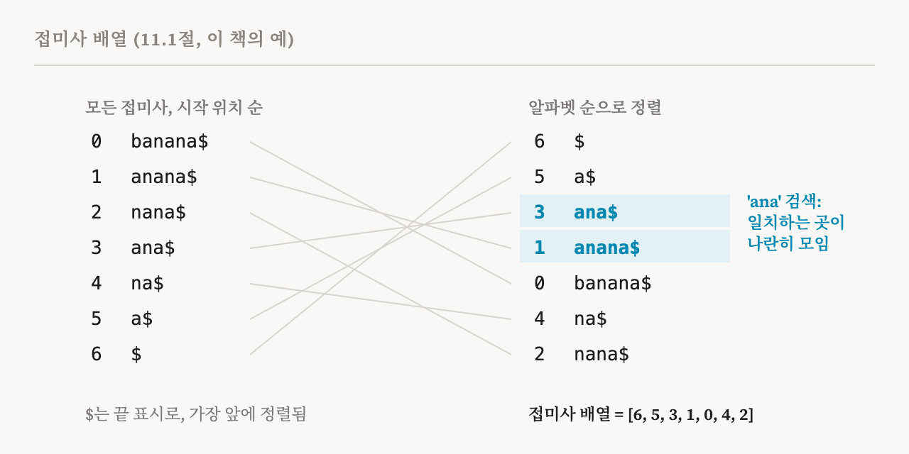
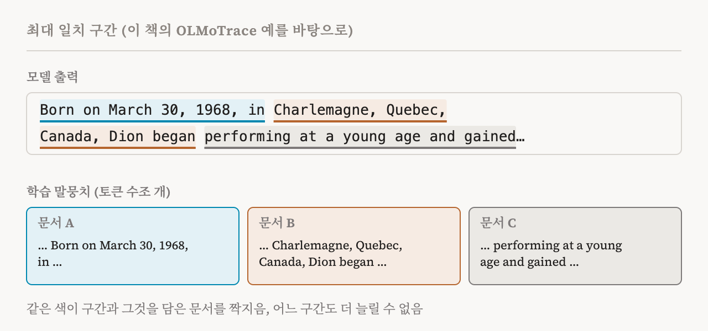

26편부터 28편까지는 모델이 학습하면서 어떻게 바뀌는지 지켜봤습니다. 이번 편은 학습 데이터 귀속(training data attribution, TDA)을 다루는 이 책 11장을 시작합니다. 장의 도입부와 11.1절(93–96쪽)입니다.
앞의 장들은 어떤 행동을 만들어 내는 내부의 특징과 구성 요소, 그리고 그것들이 어떻게 상호작용하고 발달하는지를 연구했습니다. 학습 데이터 귀속은 초점을 모델 내부에서 학습 데이터로 옮깁니다. 어떤 행동을 강하게 빚은 학습 샘플을 찾습니다.
왜 데이터를 보는가
이 책이 꼽는 쓰임새에는 영향력 있는 학습 샘플 찾기, 학습–시험 누출 찾기, 모델을 다시 학습시키지 않고 실패를 진단하기가 있습니다. 학습–시험 누출은 시험 문제가 학습 데이터에 섞여 들어가서, 높은 점수가 실력이 아니라 기억에서 나온 것일 수 있는 상황입니다. 1편에서 본 이 책 자신의 기준에 따르면 TDA는 계산을 열어 보지 않으므로 대체로 기계적 방법이 아닙니다. 하지만 여러 면에서 기계적 연구를 보완할 수 있습니다. 예를 들어 특정 학습 샘플이 해로운 행동을 어떻게 빚는지 보여 주면, 다음 세대 모델을 학습시킬 때 그 행동이, 나아가 그 내부 메커니즘까지 아예 생기지 않도록 학습 데이터를 걸러 낼 수 있을지도 모릅니다. 28편 끝의 첫 번째 열린 질문이 바로 이것이었습니다.
이런 쓰임을 염두에 두고, 이 장은 사후적 방법에 집중합니다. 학습이 끝난 모델이 주어졌을 때 그 행동을 학습 샘플과 잇는 방법입니다. 사전 학습 말뭉치를 걸러 내거나, 여러 집단의 사람들이 데이터에 나타나는 비율을 다시 맞추거나, 무엇을 외우게 할지 일정을 짜는 것처럼 데이터 처리 과정 자체에 개입하는 기법은 다루지 않습니다.
이 책은 TDA를 서로 보완하는 두 접근으로 나눕니다. 글자 그대로의 데이터 귀속은 모델의 출력과 학습 말뭉치 사이에서 정확히, 또는 거의 정확히 일치하는 문자열을 찾아서 명시적인 암기를 잡아냅니다. 이런 검색은 접미사 배열과 인피니그램 모델 같은 기법으로 수조 개의 토큰까지 규모를 키울 수 있습니다. 30편에서 다룰 기울기 기반 데이터 귀속은 학습 샘플이 모델의 파라미터와 예측에 어떤 영향을 주는지 추정하고, 글자 그대로 재현되지는 않는 영향력 있는 샘플도 잡아낼 수 있습니다. 두 방법은 서로 다른 관점을 줍니다. 하나는 '모델이 이 질문에 학습 샘플 하나를 통째로 외워서 답했는가?'에 답합니다. 다른 하나는 '이 학습 샘플이 이 모델의 이 행동에 얼마나 영향을 주었는가?'에 답합니다.
말뭉치 검색하기
2023년에 나온 ROOTS 검색 도구와 GAIA 검색 같은 초기의 말뭉치 검색 도구들은 투명성을 위해, 그리고 데이터를 탐색하기 위해 사전 학습 말뭉치에 질의하는 관행을 자리 잡게 했습니다. 2025년의 OLMoTrace는 이것을 수조 개의 토큰 규모로 키웠습니다. 학습 데이터가 공개된 OLMo 모델들을 위해 만든 도구로, 접미사 배열, 인피니그램 모델, 최대 일치 구간 추출이라는 세 가지 재료를 결합합니다. 이 책은 그래서 OLMoTrace가 영향 함수가 말하는 의미의 데이터 귀속 방법이라기보다, 모델이 외웠을 수 있는 내용을 찾아 주는 검색 도구에 가깝다고 짚습니다.
접미사 배열
문자열의 접미사란 어떤 위치에서 끝까지 이어지는 끝부분입니다. 문자열의 접미사 배열은 모든 접미사의 시작 위치를 알파벳 순서로 정렬해 늘어놓은 것입니다. 이 책의 예는 'banana'라는 단어에, 끝을 표시하며 어떤 글자보다도 앞에 정렬되는 $를 붙인 것입니다. 접미사 일곱 개는 위치 0에서 시작하는 banana$, 1의 anana$, 2의 nana$, 3의 ana$, 4의 na$, 5의 a$, 6의 $입니다. 알파벳 순서로 늘어놓으면 $, a$, ana$, anana$, banana$, na$, nana$가 되므로, 접미사 배열은 6, 5, 3, 1, 0, 4, 2입니다.

이것이 왜 도움이 될까요? 텍스트의 모든 부분 문자열은 어떤 접미사의 앞부분입니다. 접미사들을 정렬해 두면, 사전에서 같은 글자로 시작하는 단어들이 모여 있듯이 찾는 문자열이 나오는 곳이 목록에서 모두 나란히 모입니다. 그래서 목록을 거듭 반으로 나누는 방식으로 찾을 수 있습니다. 이 책의 표현으로는, 길이가 T₁인 텍스트에서 길이가 T₂인 문자열을 찾을 때 모든 위치를 확인하는 T₂ × T₁ 단계 대신 T₂ × log T₁ 정도의 단계면 됩니다. 규모를 대략 짐작해 보면, 토큰이 1조 개일 때 log T₁은 40 정도에 불과합니다. 수조 개의 토큰을 검색할 수 있는 것은 이 덕분입니다.
인피니그램
가장 오래된 언어 모델 가운데 하나인 n-그램 모델은 말뭉치의 개수를 세어 다음 토큰을 예측합니다. 앞의 토큰 n−1개 뒤에 각 토큰이 얼마나 자주 왔는지를 셉니다. 인피니그램 모델은 고정된 n을 없앱니다. 다음 토큰을 예측할 때, 앞에 이어진 토큰들 가운데 말뭉치 어딘가에 나오는 가장 긴 묶음을 찾습니다. 그리고 그 묶음 뒤에 해당 토큰이 몇 번 왔는지 세어, 그 묶음이 나온 전체 횟수로 나눕니다. 이 책의 식으로 말하면, 앞의 모든 것이 주어졌을 때 어떤 토큰의 확률은 그 토큰까지 포함해 가장 길게 일치하는 묶음의 개수를, 그 토큰을 뺀 같은 묶음의 개수로 나눈 값입니다. 인피니그램은 접미사 배열 위에 만들어지고, 접미사 배열 덕분에 거대한 말뭉치에서도 이런 개수를 빠르게 셀 수 있습니다.
최대 일치 구간
모델의 출력과 학습 말뭉치가 주어졌을 때, 최대 일치 구간은 세 가지 성질을 가진 연속된 토큰 묶음입니다. 학습 데이터에 글자 그대로 적어도 한 번 나옵니다. 양 끝을 빼면 단어를 끊거나 마침표, 줄 바꿈 같은 엉뚱한 구분 기호를 담지 않습니다. 그리고 앞의 두 성질을 가진 더 긴 묶음 안에 들어 있지 않습니다.
OLMoTrace는 네 단계로 이런 구간을 찾습니다. 모델의 출력을 토큰으로 나눕니다. 새 단어를 시작하는 토큰마다 인피니그램을 이용해 접미사 배열에 질의해서, 그 자리에서 시작해 학습 말뭉치에도 나오는 가장 긴 묶음을 찾습니다. 구간이 단어를 끊거나 구분 기호를 담지 않도록 경계를 다듬습니다. 마지막으로 더 긴 일치 구간 안에 들어 있지 않은 최대 구간만 남깁니다.
이 책의 예는 가수 셀린 디옹에 관한 출력입니다. 찾아낸 구간에는 "Born on March 30, 1968, in", "Charlemagne, Quebec, Canada, Dion began", "Her career took off when she won the 1988", "Eurovision Song Contest with the song 'Ne"가 있습니다. 하나하나가 학습 말뭉치에 글자 그대로 나오는 출력의 일부이고, 그래서 출력을 그것이 외워졌을 수 있는 문서와 곧바로 이어 줍니다.

일치가 설명하지 못하는 것
이 책은 이것이 기계적 해석 가능성의 도구로서 갖는 한계를 분명히 합니다. 글자 그대로의 귀속은 사실의 암기에는 탁월하지만, 여러 요소를 엮거나 새로 종합한 출력에는 힘을 쓰지 못합니다. 번역, 시, 추론 같은 과제에서 OLMoTrace와 다른 정확 일치 방법은 학습 데이터에 나오는 텍스트 구간을 찾아낼 수 있습니다. 하지만 그런 일치는 모델이 여러 출처의 정보를 어떻게 결합해서 출력을 만들었는지 설명하지 못합니다.
이 책의 두 번째 예가 두 가지를 모두 보여 줍니다. 책 읽기를 좋아하는 소녀에 관한 짧은 이야기를 중국어로 써 달라고 하자, 모델은 쉐얼이라는 작은 공주가 귀여운 작은 여우를 곁에 두고, 대나무 숲에 앉아 먼 곳을 바라보기를 좋아한다는 이야기로 시작했습니다. OLMoTrace는 이 첫 문장을 사전 학습 말뭉치의 한 구간에서 찾았습니다. 그녀가 과학 기술, 심리학, 역사에 관한 책 읽기를 좋아하고 여가 시간에는 프로그래밍 수업도 듣는다는 다른 문장은, 지시 따르기 학습에 쓰인 사후 학습 데이터의 한 구간과 일치했습니다. 이 예는 OLMoTrace가 다른 언어로 된 출력도 사전 학습과 사후 학습이라는 꽤 다른 출처까지 거슬러 추적할 수 있음을 보여 줍니다. 한계를 말한 바로 다음에 놓인 이 예는 방법의 경계도 보여 줍니다. 두 문장이 어디서 왔는지 안다고 해서, 모델이 그 둘을 이야기 하나로 잇기로 어떻게 정했는지 알게 되지는 않습니다.
데이터를 보는 두 관점
| 접근 | 답하는 질문 | 강점과 한계 |
|---|---|---|
| 글자 그대로, 예: OLMoTrace | 모델이 학습 텍스트를 글자 그대로 재현했는가? | 수조 개의 토큰까지 규모를 키울 수 있음, 조각들을 어떻게 엮었는지는 말하지 못함 |
| 기울기 기반, 예: 영향 함수(30편) | 학습 예시 하나가 이 행동에 얼마나 영향을 주었는가? | 정확히 일치하지 않아도 영향을 찾음, 근사적이고 비용이 큼 |
| 용어 | 뜻 |
|---|---|
| 학습 데이터 귀속(TDA) | 모델의 행동을 그것을 빚은 학습 예시까지 거슬러 추적하는 것 |
| 학습–시험 누출 | 시험 자료가 학습 데이터에도 들어 있는 것 |
| 글자 그대로의 귀속 | 출력과 학습 데이터 사이에서 정확히, 또는 거의 정확히 일치하는 것을 찾는 것 |
| 암기 | 일반적인 패턴으로 만들어 내는 대신 학습 텍스트를 그대로 재현하는 것 |
| 접미사 | 문자열에서 어떤 위치부터 끝까지의 부분 |
| 접미사 배열 | 텍스트의 모든 접미사의 시작 위치를 알파벳 순서로 늘어놓은 것 |
| n-그램 모델 | 앞의 토큰 n−1개에 대한 개수로 다음 토큰을 예측하는 모델 |
| 인피니그램 | 말뭉치에서 찾은 가장 긴 앞부분 묶음을 쓰는 n-그램 모델 |
| 최대 일치 구간 | 말뭉치에 글자 그대로 나오고, 끝이 깔끔하며, 더 늘릴 수 없는 출력의 구간 |
| 사후 학습 데이터 | 지시 따르기 학습 예시처럼 사전 학습 뒤에 쓰는 데이터 |
30편에서는 기울기 기반 귀속으로 넘어갑니다. 학습 예시 하나를 조금 더 무겁게 쳤다면 모델이 어떻게 바뀌었을지 묻는 영향 함수입니다.